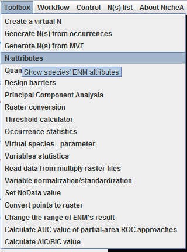
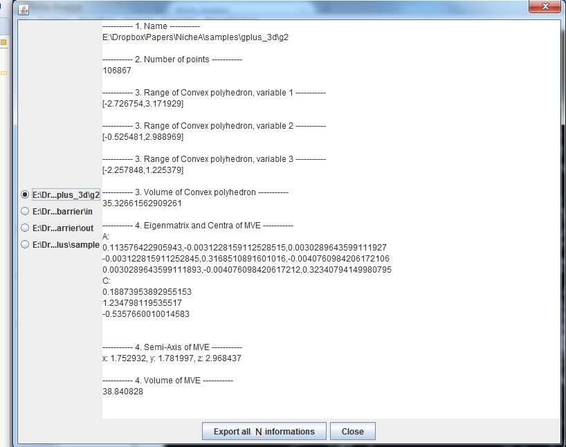

N attributes
In the previous sections, we generated several Ns. All the Ns can be opened in one scenarios if they are generated based on one BC. If you want to see the detail of every N, you can invoke the "N attributes" function (Fig.1). On the left of popup dialog, you can select one of N, the attribute shows on the right. If you click the "Export all N informations" button on the bottom, NicheA will export all the Ns' informations into a CSV/TXT file.
Figure 1.
The menu for this function.

Figure 2.
The dialog of the function.
